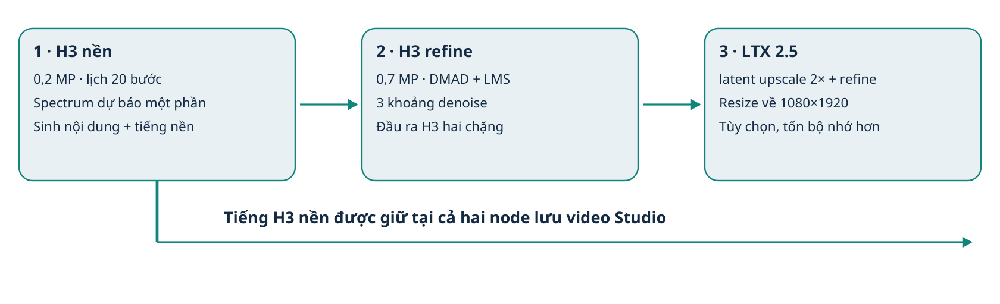
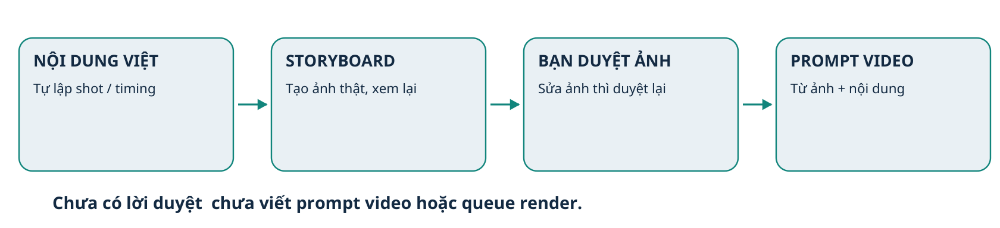
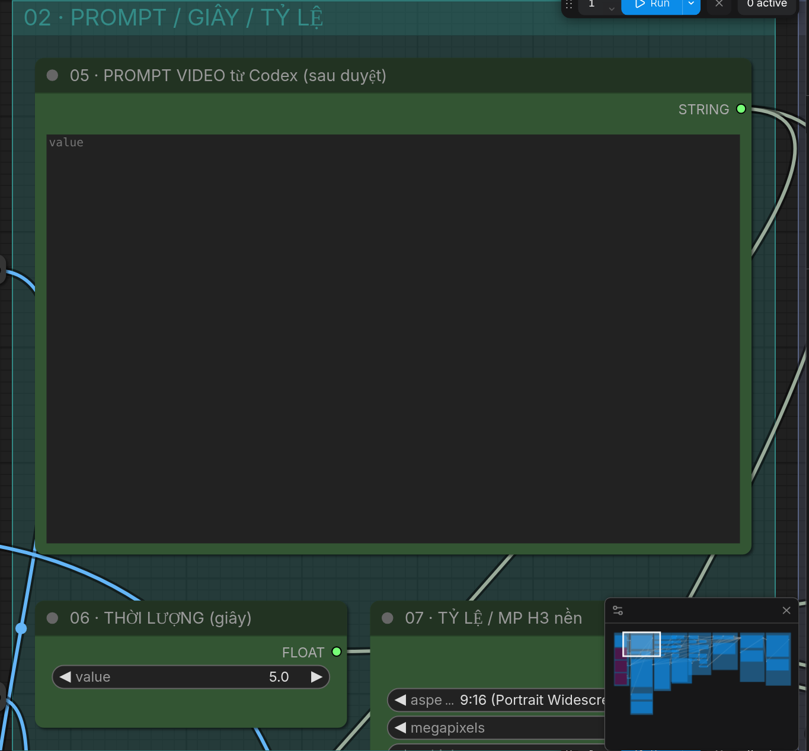
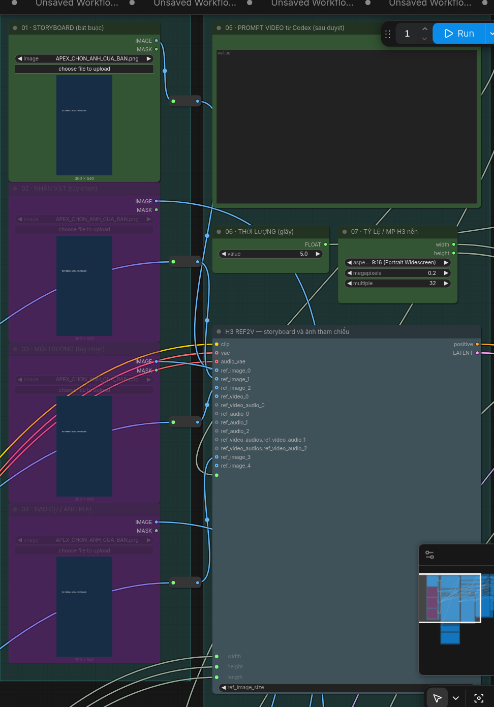
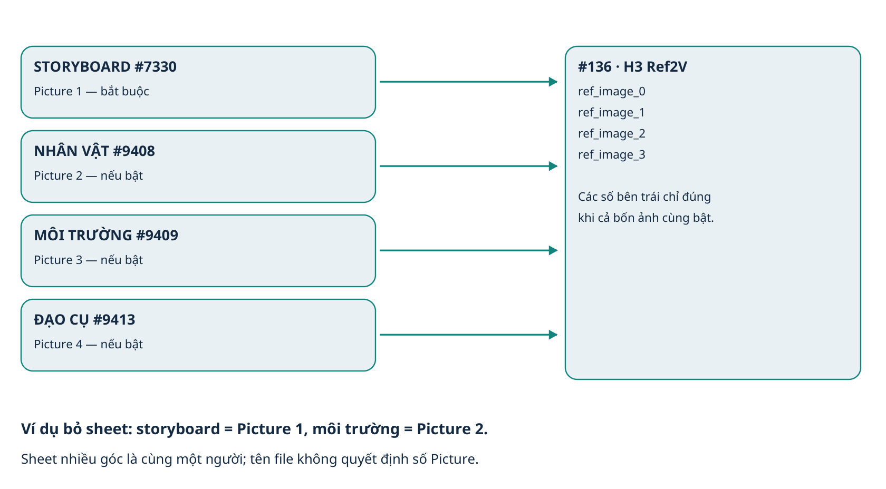

Apex H3 V7 · Hướng dẫnApex H3 V7 Studio
Hướng dẫn tiếng Việt · v1.0.0 · 09/11/2026. Dành cho ComfyUI Windows Portable, RTX4060 Ti16 GB và RAM 32 GB. Phong cách: 3D bán hiện thực Á Đông / CGI beauty render, pha nét búp bê.
Gói giữ JSON Apex V7 tác giả riêng trong source, đồng thời tạo hai preset Studio phù hợp storyboard + ảnh nhân vật. Cả hai dùng H3 Ref2V; preset đầy đủ thêm LTX 2.5. Đây là phiên bản điều chỉnh có ghi rõ thay đổi, không phải JSON gốc nguyên trạng.
Bắt đầu: giải nén → đóng ComfyUI → chạy CAI_DAT_H3_NHE.bat để thử hai chặng H3, hoặc CAI_DAT.bat để tải đủ H3 + LTX → mở lại ComfyUI → chạy KIEM_TRA.bat → mở workflow 01, nạp storyboard thật, dán prompt đã được duyệt và thử5 giây.
Đã kiểm tra import node/UI/schema bằng CPU và kiểm tra đường tải model. Chưa render bằng4060 Ti, chưa benchmark tốc độ/chất lượng và chưa kiểm thử Windows thật. Không có cam kết hết biến dạng mặt, bám cut tuyệt đối hoặc tiếng Việt chính xác.

Ba chặng xử lý. H3 hai chặng dừng ở ô thứ hai.1. Trong gói có gì?
CAI_DAT.bat tải đủ14 model, cài bốn pack node có revision cố định và sao chép hai workflow. CAI_DAT_H3_NHE.bat chỉ tải tám model H3 và sao chép workflow 01. Chạy bản đầy đủ sau bản nhẹ sẽ dùng lại các file đúng checksum và chỉ tải phần còn thiếu.
KIEM_TRA.bat kiểm tra file theo tên/dung lượng và các loại node tại localhost:8188/object_info. Đây là kiểm tra nhanh, không queue và không đọc toàn bộ hash lần nữa. CAI_LAI_NODE.bat chỉ cài lại bốn pack node, không tải model.
workflows/01_APEX_V7_3D_H3_2PASS_DOC.json: H3 nền + H3 latent upscale/refine, dọc9:16. workflows/02_APEX_V7_3D_LTX_1080_DOC.json: thêm LTX 2.5 và file 1080×1920. source/Apex_H3_v7_original.json là bản tác giả để đối chiếu; không tự chép vào danh sách workflow chạy của Studio.
skill/minimax-h3-film chứa skillv4 cho Codex. docs có PDF, DOCX, HTML và Markdown cùng ảnh giao diện. manifest.json chứa URL/revision/dung lượng/SHA256. reports lưu bằng chứng kiểm tra; vendor chứa ZIP source node và giấy phép của các repository. Không kèm model lớn hoặc video nguồn.
2. Yêu cầu máy và dung lượng
Máy của bạn có16 GB VRAM và32 GB RAM. Model H3 INT8 riêng khoảng20,97 GB; encoder H3 INT8 khoảng27,14 GB. Dung lượng file không bằng VRAM cần dùng đồng thời: ComfyUI có cơ chế offload, nhưng vẫn có thể thiếu RAM/pagefile hoặc chạy rất chậm. Giảm độ phân giải không làm checkpoint nhỏ đi.
Tải mới toàn bộ: H3 hai chặng khoảng53,83 GB; đầy đủ khoảng93,67 GB, chưa tính Python dependency, output và pagefile. Bộ cài tính lại theo file đang thiếu. SSD nên còn thêm khoảng trống cho output; Windows có thể cần pagefile lớn hơn nếu gặp lỗi thiếu bộ nhớ.
Giữ pagefile System managed trên SSD còn trống trước. Nếu Windows báo thiếu committed memory, có thể phải tăng pagefile, ví dụ64–96 GB tùy phần còn trống; đó là gợi ý xử lý, không phải mức bảo đảm chạy được. Không có phép đo peakRAM/VRAM của gói trên phần cứng này.
Dùng ComfyUI Portable đang chạy được H3 và driver NVIDIA hiện có. Bộ cài không tự thay core, Torch, CUDA hoặc driver. Nếu thiếu native node, cập nhật core bằng update/update_comfyui.bat của chính Portable rồi mở thử trước. Cổng schema mặc định8188; dùng CLI --port nếu bạn đổi cổng.
| Bước thử | Khuyến nghị đầu tiên |
|---|
| Lượt video | 5 giây, 24 FPS; giữ seed để A/B |
| Ảnh | Storyboard; thêm một sheet khi thật sự cần |
| Bộ nhớ | H3 hai chặng trước; đóng ứng dụng nặng khác |
| 1080p | Chỉ thử LTX sau khi H3 đã đúng nội dung/mặt/tiếng |
3. Cài đặt — chọn thư mục nào?
Giải nén ZIP ra một thư mục bình thường. Không chạy script trực tiếp trong cửa sổ xem ZIP. Đóng cửa sổ ComfyUI/Python đang chạy trước khi thay node.
Đích mặc định đúng máy bạn: C:\Ai\ComfyUI_windows_portable_nvidia\ComfyUI_windows_portable. Thư mục này phải chứa hai thư mục con ComfyUI và python_embeded. Nếu không tìm thấy, bộ cài mở hộp chọn THƯ MỤC; không phải hộp chọn workflow JSON.
Chạy CAI_DAT_H3_NHE.bat hoặc CAI_DAT.bat. Script dùng Python nhúng của chính Portable, với -I để tránh lỗi import do scripts/select.py hoặc tên file trùng thư viện chuẩn. Không cần Git để tải node; archive đã đóng gói và có checksum.
File model tải vào ComfyUI/models/<nhóm> với đuôi .part khi chưa xong. Mất mạng thì chạy lại để tiếp tục. Chỉ đổi thành .safetensors sau khi đủ byte và đúng SHA256. Nếu gặp cùng tên mà sai dung lượng/hash, bộ cài dừng và giữ file cũ; bạn đổi tên/chuyển file đó ra ngoài rồi chạy lại.
Sau khi cài: mở lại bằng run_nvidia_gpu.bat bạn đang dùng, chờ node import xong; chạy KIEM_TRA.bat. Ctrl+F5 trình duyệt nếu cache cũ. Trong Workflow Browser mở thư mục Apex_H3_V7_Studio. Bạn cũng có thể kéo JSON01/02 trực tiếp lên canvas.
Log nằm ở thư mục bộ cài/logs. Backup node/workflow cũ nằm trong ComfyUI/user/ApexV7/backups, nằm ngoài custom_nodes để tránh nạp trùng. Không xóa backup trước khi xác nhận các workflow cũ còn dùng được.
4. Từ nội dung Việt đến clip
Cho Codex đọc skill/minimax-h3-film/SKILL.md và JSON preset bạn sẽ dùng. Đưa nội dung Việt, ảnh nhân vật, môi trường/đạo cụ nếu có; chỉ rõ file nào là ai. Không cần viết sẵn prompt tiếng Anh.
Codex hỏi gộp phần thiếu rồi đề xuất số shot, lưới và giây từng shot theo hành động. Không cố định2×2,2×3 hay3×3; không chia đều thời gian. Mỗi ô có nhãn SHOT trong caption riêng và một khoảnh khắc rõ.
Codex tạo storyboard thật rồi gửi bạn duyệt. Chưa có lời duyệt thì chưa viết prompt video. Sau duyệt, Codex đọc lại đúng ảnh + nội dung/thoại để tạo prompt Anh, bảng nạp ảnh và setting. Sửa ảnh phải duyệt lại revision mới.
Nạp ảnh ở loader01, bật các loader phụ đúng bảng Codex. Dán toàn bộ prompt vào #138, đặt giây #132. Chạy H3 hai chặng thử ngắn. Xem đúng người/áo/tay/shot/thứ tự và nghe tiếng trước khi nâng lên LTX.
Muốn làm tập 1 phút: chia thành nhiều lượt liên tục, chẳng hạn5–15 giây/lượt; sau đó dựng nối. Trần30 giây/lượt của dự án không chứng minh H3 chạy tốt30 giây. Cảnh dựng1 giây có thể lấy đoạn đủ hành động từ clip nguồn dài hơn.

Quy trình bắt buộc: duyệt ảnh trước, viết prompt video sau.5. Khu vực nhập liệu trong UI
Các nhãn có số giúp tìm nhanh: #7330 là “01 · STORYBOARD”; #138 là “05 · PROMPT VIDEO”; #132 là “06 · THỜI LƯỢNG”; #115 là “07 · TỶ LỆ / MP H3 nền”. ID là mã node, không phải số thứ tự SHOT.
Ảnh xanh chữ TEST trong hình dưới chỉ là fixture để kiểm tra UI, không phải storyboard hay ảnh Lan. Bạn phải chọn ảnh thật trên máy mình. Ba loader màu tím đang bypass mặc định; chọn ảnh xong mới bật khi prompt có dùng.
Trong canvas truyền thống, chọn loader phụ rồi Ctrl+B để bật/tắt bypass, hoặc dùng menu chuột phải Modes → Bypass. Nên thao tác trên loader LoadImage, không bypass node Ref2V chung. Chọn ảnh thật trước khi bật để tránh lỗi image not loaded.

Prompt, giây và tỷ lệ trong giao diện ComfyUI thực. Giá trị giây ở #132, không nằm trong node lưu MP4.
Các loader, Reroute và node Ref2V đã có dây thật; khung minh họa không chứa ảnh phim.6. Ảnh tham chiếu và số Picture
Storyboard vào #7330 → ref_image_0. Character sheet vào #9408 → ref_image_1. Môi trường vào #9409 → ref_image_2. Đạo cụ/ảnh bổ sung vào #9413 → ref_image_3. Vai trò phụ có thể đổi, ví dụ dùng ô môi trường cho nhân vật thứ hai, nhưng phải nói rõ để Codex cập nhật prompt.
H3 đánh Picture theo các ảnh thực đang nối và bật, bỏ qua ảnh không có dữ liệu. Bật cả bốn thì số1–4 tương ứng. Nếu bypass sheet mà vẫn bật môi trường, môi trường thành Picture2. Không cố gọi Picture3 chỉ vì file được đặt tên image3.
Một character sheet nhiều góc là một người; prompt phải giải thích điều này để giảm nhân bản. Không đưa sheet thay storyboard ở ảnh đầu. Có thể chỉ dùng storyboard; khi đó không gọi ảnh sheet không tồn tại.
Bản tác giả nguyên gốc chỉ có ảnh đầu thực nối vào Ref2V. Preset Studio thêm ba dây/socket còn thiếu. Muốn hơn bốn ảnh, thêm loader và cổng Autogrow thật trước khi ghi thêm Picture trong prompt; core cho tối đa9 ảnh nhưng VRAM/tokens tăng và không bảo đảm chất lượng tăng.

Ánh xạ ảnh khi tất cả cùng bật; ví dụ đánh số lại khi bỏ một ảnh.7. Storyboard không phải khung đầu I2V
Apex V7 dùng Ref2V: storyboard là tham chiếu bố cục/thứ tự shot. Prompt yêu cầu biến từng ô thành cảnh toàn khung hình, diễn ra tuần tự, không còn lưới/nhãn/viền. Không cần cắt lẻ ngay từ đầu nếu model bám tốt nguyên board.
I2V dùng ảnh như frame đầu. Đưa nguyên grid vào I2V thường khiến model animate cả tờ board hoặc giữ bố cục chia ô. Vì vậy không đổi node/task tùy tiện rồi giữ nguyên cách viết prompt.
Ref2V cũng không có bộ dựng cảnh tuyệt đối: nhiều ô, quá nhiều cut hay chuyển động phức tạp có thể bị trộn/mất cảnh. Thử lượt ngắn ít shot; nếu vẫn sai, bàn với Codex phương án render từng shot từ frame sạch, với checkpoint/task phù hợp.
Lưới là số hàng/cột của trang. Tỷ lệ video là tỷ lệ mỗi shot. Một trang2×3 có thể chứa sáu shot dọc9:16; tỷ lệ toàn trang không phải9:16. Caption SHOT nằm ngoài nội dung ảnh để dễ bỏ nhãn khi tạo video.
8. Thời lượng, FPS và tỷ lệ
Giây đặt tại #132. #131 quy đổi theo 24 FPS rồi làm tròn lên lưới H3: max(5,round(giây×24)) + (5 − max(5,round(giây×24)) mod17) mod17. Đây là17n+5frame; thời lượng thật có thể dài hơn giây danh nghĩa một chút.
Không đổi FPS ở node lưu thành30 để “mượt” mà vẫn giữ framecount24 FPS; việc đó có thể đổi tốc độ và lệch audio. Nội suy frame là một bước khác, workflow này không có.
Hai selector phải cùng tỷ lệ: #115 ngoài root và #7346 trong nhóm #7129. Với9:16 (Portrait Widescreen), .2MP/bội 32 ra352×608; .7MP ra640×1152. Làm tròn bội 32 khiến tỷ lệ hơi lệch so với9:16 tuyệt đối.
Preset full có #9258:#9411 resize 1080×1920. Muốn16:9: đổi cả hai selector sang16:9 (Widescreen) và #9411 thành 1920×1080. Chỉ đổi selector đầu sẽ khiến refine/final lệch tỷ lệ.
Để vào subgraph, dùng thao tác mở/biểu tượng của group hoặc menu Edit Subgraph tùy frontend. Tìm ID7346 bằng node list nếu khó nhìn; không nhầm độ phân giải hiển thị cũ trong widget nội bộ với giá trị đã được dây điều khiển.
| Giây #132 | H3 frame | H3 thời lượng | Lưu ý |
|---|
| 5 | 124 | 5,167s | Mức thử đầu tiên |
| 10 | 243 | 10,125 s | Tăng sau khi5 s ổn |
| 15 | 362 | 15,083s | Đầu trên vùng hướng dẫn profile |
| 1 (dựng) | Không ép toàn clip1s | Cắt từ lượt nguồn | Giữ trọn động tác/thoại |
9. Chặng H3 nền — nội dung và tiếng
Model #127 là Singularity Ref2VA v1.3 INT8, đúng tên/revision trong manifest; không tự thay thànhv2 chỉ vì tên gần giống. Encoder #128 là Qwen3VL 32B H3 INT8convrot, không phải Qwen 8B viết prompt.
#146 Turbo nền mặc định TẮT. Khi tắt, model đi qua Spectrum, schedule dùng20 bước. DMAD nằm ở nhánh khác dùng cho refine. Đây không phải công tắc bật/tắt upscale.
Spectrum dùng forecasting để tránh một phần lần tính transformer; vì thế20 bước lịch không nhất thiết20 lần tính model thực. Khi so tốc độ phải ghi số bước thật/forecast, không dùng số lịch để suy ra mức tăng tốc.
Spectrum audio_blend=0 và offline_smoothing_replay=true theo nguồn. Giữ seed #129 khi so sánh bật/tắt Spectrum; nghe cùng câu thoại, không kết luận tiếng Việt chuẩn chỉ từ setting.
| Mục | Giá trị Studio | Công dụng |
|---|
| #115 | 0,2 MP; bội 32 | Nền rẻ hơn trước refine |
| #143 / #124 | 20 / simple / denoise1 | Lịch sampling nền |
| #123 | res_multistep | Thuật toán lấy mẫu nền |
| #129 | Seed cố định | So A/B dễ hơn, không khóa mặt |
| #136 ref_image_size | max | Ưu tiên chi tiết refs, tăng tokens/VRAM |
| Ref size match | Tùy chọn giảm tải | Giảm ref theo vùng tạo, có thể mất nét nhận diện |
| #7347 | Preview; save_output=false | Xem nền, không lưu file chính mặc định |
10. H3 upscale/refine — chi tiết và mặt
Model refine: #145 DMAD strength 0,8 → #9370 LMS strength 0,5 → nhóm #7129. Nền thường và refine không cùng nhánh model. Không chồng thêm Turbo/Pika/Taomate chỉ vì đã có các file đó trong workflow khác.
Trong nhóm, #6924 dùng neural latent upscaler3D conv_v1 BF16. Bộ cài dùng tên model canonical của nhà phát hành, không đổi tên model 2D hoặc modelkhác cho khớp widget. Header322 tensor đã đối chiếu tên/shape với kiến trúc node pinned bằng CPU/meta, chưa chạy dữ liệu thật.
JSON tác giả lưu enable_temporal_chunking/force_unload nhưng commit node đi kèm không có hai input đó. Preset sửa đúng schema: mode target dimensions, align32, keep_proportion=false, devicecuda, precisionbf16. Không thấy hai mục chunk/unload trong UI mới không phải thiếu node.
Refine có thể vẽ lại mặt, mắt, tóc hoặc nền. Sigma khởi đầu0,8 khá mạnh; nếu mất mặt, thử riêng mức thấp hơn như0,6 trên cùng seed/ảnh, không coi đó là preset đã được benchmark. Luôn kiểm tra motion và khẩu hình, không chỉ độ nét một frame.
| Node trong #7129 | Giá trị | Ý nghĩa |
|---|
| #7346 | 0,7 MP; cùng tỷ lệ nền | Kích thước refine |
| #9483 | 0.80, 0.60, 0.35, 0.00 | 4 mốc = 3 khoảng denoise |
| #7230 | euler_ancestral | Sampler refine |
| #6920 | Noise cùng seed gốc | Refine latent đã upscale |
| #7385 (root) | IMAGE output2 + First Pass Audio output4 | Lưu H3 refine với tiếng nền |
11. LTX2.5 — bước hoàn thiện cuối
Nhóm #9258 mã hóa lại ảnh H3 bằng VAE LTX 2.5, upscale latent 2×, refine bằng LTX 2.5 distilled INT8, decode tiled và resize về1080×1920. Đây là một model khác; có thể đổi mặt/style/motion. Đầu ra1080p không có nghĩa H3 đã sinh gốc1080p.
Text encoder ở gói này là Gemma3 FP8 và text projection LTX 2.3 đúng JSON nguồn. Không đổi thành Gemma4 hoặc projection khác chỉ vì tênrepo cùng LTX 2.5. VAE audio/video cũng tách riêng với H3.
LTX có audio encoding/conditioning nội bộ, nhưng file cuối #9259 dùng lại tiếng H3 nền #121. Như vậy LTX không thay track phát âm cuối; khẩu hình vẫn có thể thay đổi vì hình đã refine.
Các video/frame grid không giống nhau: H3 dùng17n+5, LTX dùng grid8n+1; một số lượt có thể mất vài frame. Kiểm tra framecount/duration thật của file MP4, trim hoặc dựng lại audio khi cần. Không tự bật trim_to_audio để chữa mọi trường hợp.
Sau khi storyboard được duyệt, Codex có thể đưa thêm một đoạn LTX positive ngắn ở trường text của nhóm #9258: giữ style, nhân vật/trang phục và bối cảnh đã chốt, bảo toàn chuyển động/khối mặt. LTX nhận video pixel, không nhận ảnh Picture của H3; không sao chép nguyên prompt Ref2V hoặc token Picture vào trường này. Preset có mô tả bảo toàn style chung để bắt đầu.
| Setting | Giá trị nguồn giữ lại | Công dụng |
|---|
| Scheduler | beta, 2 steps, denoise 0.2 | Refine nhẹ latent |
| Sampler / CFG | euler / video 1, audio 1 | Thiết lập distilled |
| Latent upscaler | LTX 2.5 spatial2× BF16 | Nâng spatial latent |
| Decode tiled | 512 / overlap 64 | Giảm áp lực decode spatial |
| Temporal tile | 64 / overlap 16 | Chia decode theo thời gian |
| #9411 | 1080×1920,center,lanczos | Kích thước/crop cuối |
| #9259 | h264-mp4, 24 FPS, CRF 19, yuv420p | Lưu output/ApexV7/03_LTX_1080_DOC… |
12. Giữ style 3D và tiếng Việt
Preset 3D bỏ RealismPeople và sửa prompt LTX không phủ định cartoon/CGI. Cinematic LoRA ở link Civitai hướng tới điện ảnh người thật/giảm vẻ plastic; không có trong JSON Apex tải được và không bắt buộc để chạy pipeline. Vì có thể xung đột nét búp bê, gói không tự tải hoặc bật nó.
Nếu muốn thử Cinematic: tải từ trang Civitai bằng quyền truy cập hợp lệ rồi kiểm tra file, thử riêng strength 0,5–0,7 theo tác giả, giữ một bản không LoRA để đối chứng. Lần kiểm tra URL download đã trả HTML/403; gói không lưu HTML thành weights, không báo đã cài. Chi tiết version/hash được ghi trong manifest.optional_cinematic.
Prompt style nên mô tả vật liệu/khối mặt/mắt/tóc/skin shading nhất quán với sheet và storyboard. Character sheet giúp tham chiếu danh tính, không bảo đảm khóa mặt. Chuyển động nhanh: ít hành động cùng lúc, camera đơn giản hơn, mặt đủ lớn trong khung, các lượt ngắn hơn để duyệt.
Tiếng Việt: giữ câu gốc có dấu, ai nói và nói lúc nào; tránh nhiều người nói chồng hoặc câu quá dài. Không tự dịch/phiên âm. Nghe thử clip nền: sai ở nền thì giữ audio nền đến cuối cũng không làm nó đúng hơn.
Nếu cần chính xác câu/giọng: tạo bản thu hoặc TTS riêng rồi dựng, và xử lý lip-sync phù hợp nếu là thoại trong cảnh. Workflow này không có node TTS Việt hoặc sửa lip-sync độc lập. Không nhận rằng LoRA tăng tốc có thể tự chữa phát âm.
13. Danh sách 14 model
File tải từ Hugging Face tại revision cố định; SHA256 và số byte lấy từ metadataLFS và lưu trong manifest.json. Đường tải cả14file đã trả dữ liệu có prefix safetensors khi kiểm tra 16 byte đầu. Đây là kiểm tra truy cập/định dạng ban đầu, không phải xác thực toàn bộ trọng số đã tải ở môi trường này.
Khi cài thật, mỗi file mới được kiểm tra toàn bộ SHA256. File có sẵn cùng tên cũng được hash trước khi tái sử dụng; model để trong thư mục con hoặc extra_model_paths.yaml được giữ đường dẫn tương đối để workflow gọi đúng. v1.3 và v2 là hai file khác nhau, không được giả vờ dùng lại vì cùng dung lượng.
| Model / thư mục | GB | Gói |
|---|
Minimax-h3_Singularity_ref2va_Pruned_v1.3_int8.safetensors
models/diffusion_models | 20.968 | H3 |
qwen3vl_32b_minimax_h3_int8_convrot.safetensors
models/text_encoders | 27.141 | H3 |
minimax_h3_video_vae_int8_convrot.safetensors
models/vae | 2.811 | H3 |
minimax_h3_audio_vae_fp32.safetensors
models/vae | 0.605 | H3 |
minimax_h3_DMAD_4step_full_lora_avg_rank_39_bf16.safetensors
models/loras | 0.367 | H3 |
minimax_h3_lms_v1.0_r64.safetensors
models/loras | 1.240 | H3 |
minimax_h3_latent_upscaler_3d_conv_v1_bf16.safetensors
models/latent_upscale_models | 0.691 | H3 |
taeh3.safetensors
models/vae_approx | 0.010 | H3 |
ltx-2.5-22b-distilled-transformer-comfy-int8-convrot.safetensors
models/diffusion_models | 21.504 | +LTX |
ltx-2.5-video-vae-conv-bf16.safetensors
models/vae | 1.452 | +LTX |
ltx-2.5-audio-vae-bf16.safetensors
models/vae | 0.365 | +LTX |
gemma-3-12b-it-heretic-v2_fp8_e4m3fn.safetensors
models/text_encoders | 13.210 | +LTX |
ltx-2.3_text_projection_bf16.safetensors
models/text_encoders | 2.312 | +LTX |
ltx-2.5-latent-spatial-upscaler-x2-bf16-1.0.safetensors
models/latent_upscale_models | 0.996 | +LTX |
14. Custom node, dependency và backup
Bốn pack trong bảng là source đúng theo JSON và repository đã kiểm tra. H3 Ref2V, ResolutionSelector, ModelAttentionBackend và các node LTX chính thuộc ComfyUI core; không cần tìm một pack riêng cho mỗi node native.
Các Python dependency được bổ sung khi module còn thiếu: Pillow, matplotlib, color-matcher, mss, OpenCV và imageio-ffmpeg. Installer khóa các distribution đang có khi giải quyết dependency; không chủ động nâng Torch. Xung đột pip sẽ dừng và có log để kiểm tra.
Pack có thể chứa node không dùng trong graph. CPU test có cảnh báo thiếu Triton cho PatchTritonVAE, nhưng ba node KJ đang dùng đều nạp được. Không cần cài Triton/SageAttention chỉ để làm mất cảnh báo của một node không được dùng.
Nếu pack đã có nội dung khác, script chuyển bản cũ ra user/ApexV7/backups rồi đặt bản có revision cố định. Sao chép thất bại thì khôi phục bản cũ; chạy lại cùng bản không tạo thêm backup. Các workflow cũ dùng pack đó có thể chịu ảnh hưởng khi đổi phiên bản, nên giữ backup.
Khôi phục: đóng ComfyUI, chuyển pack mới ra ngoài custom_nodes, chuyển bản backup về đúng vị trí/tên cũ rồi mở lại. Không để cả bản main/master/bản cũ cùng nạp vì có thể trùng đăng ký node.
| Repository / commit | Node dùng |
|---|
xmarre/ComfyUI-Spectrum-MiniMax-H3
24353c01ce6423a4dba3ddefcc4a53e0541ee875 | SpectrumApplyMiniMaxH3 |
LBH-123-AI/Comfyui_Minimax_h3_latent_Upscaler
64fc9d4c7e2c03e8c61d6886182e3309365a1962 | MinimaxH3LatentUpscaler3D |
kijai/ComfyUI-KJNodes
ab72eda7ffad6280422d71ab7d54d3fb87c0ba18 | ModelPreviewOverrideKJ
VisualizeSigmasKJ
VRAM_Debug |
Kosinkadink/ComfyUI-VideoHelperSuite
4d907bee61e92c2e65af3bd6383a4e4d356126d1 | VHS_VideoCombine |
15. Lỗi thường gặp và cách sửa
| Biểu hiện | Kiểm tra và xử lý |
|---|
| Image not loaded | Chọn storyboard thật tại #7330. Ảnh phụ không dùng thì bypass; ảnh muốn dùng phải chọn file trước rồi bật. |
| Prompt gọi Picture 2 nhưng chỉ có một ảnh | Đối chiếu loader/socket/bypass. Nối và bật sheet thật hoặc sửa prompt chỉ gọi ảnh đang có; không thêm số ảo. |
| Node unknown / import failed | Đóng ComfyUI, chạy CAI_LAI_NODE.bat rồi mở lại. Xem console import và log pip. KIEM_TRA phải thấy đủ type của profile. |
| Model unknown architecture | Dùng đúng Singularity v1.3 Ref2VA; core phải hỗ trợ INT8 convrot. Không đổi đuôi GGUF thành safetensors. |
| CLIP GGUF / llama.cpp | Preset dùng encoder H3 INT8 safetensors, không dùng GGUF. Chọn đúng file và type=minimax. |
| Sai codec / chroma_subsampling | Installer điều chỉnh thứ tự widget CreateVideo theo core. Chạy lại để chép preset tương thích. Node lưu MP4 chính là VHS_VideoCombine. |
| Video vẫn còn lưới / chia ô | Xác nhận đang dùng Ref2V; prompt nói mỗi ô thành một shot toàn khung hình, bỏ lưới/nhãn. Thử ít shot trong một lượt trước upscale. |
| Mặt đổi sau refine / LTX | So đầu ra bước 1/2/3 cùng seed. Thử giảm mức repaint hoặc bỏ LTX; upscale không tự khóa mặt. |
| CUDA OOM / thiếu RAM | Thử 5 giây, H3-only, ít ảnh; có thể đổi ref_image_size từ max sang match hoặc giảm MP refine. Kiểm tra pagefile và SSD. Lowvram là một phép thử chưa benchmark. |
| Đứt tải / sai SHA256 | Chạy lại để resume. .part.corrupt… không được cài. File có sẵn bị sai sẽ được giữ nguyên để bạn đổi tên/chuyển ra ngoài. |
| Không thấy clip lưu | Mở ComfyUI/output/ApexV7. H3 nền chỉ preview; #7385 và #9259 có save_output=true. Xem console nếu FFmpeg/VHS báo lỗi. |
| Tiếng sai / lệch môi | Nghe tiếng H3 nền trước. Giữ audio nền không chữa phát âm sai; refine/LTX vẫn có thể đổi khẩu hình. Dùng track riêng khi cần chính xác. |
16. Cài skill và kiểm tra nháp
Trong Codex local, sao lưu skill minimax-h3-film cũ rồi chép nguyên thư mục skill/minimax-h3-film vào thư mục skills của cấu hình Codex, thường là %USERPROFILE%\.codex\skills. Không chép skill vào ComfyUI/custom_nodes. Hoặc đính kèm SKILL.md, các reference Apex và JSON khi trò chuyện.
Ví dụ giai đoạn A: “Đọc skill và dùng preset Apex V7. Nội dung 15 giây: Lan ngồi bên đồng lúa chín và nhìn mây trái tim, hoàng hôn, dọc 9:16. Tạo storyboard để tôi duyệt trước.” Đây là yêu cầu tạo ảnh và shot plan, chưa phải yêu cầu tạo prompt video trước duyệt.
Sau lời duyệt ảnh, Codex giao một prompt hoàn chỉnh cho mỗi lượt và bảng số Picture theo các ảnh thật đang bật. scripts/apex_handoff.py chỉ là helper read-only cho Codex; bạn không cần chạy nó để có prompt.
Duyệt nháp: đủ shot và đúng thứ tự; đúng người, trang phục, tay và đạo cụ; hành động có kết thúc; camera hợp lý; không còn chữ/lưới; nghe đúng lời Việt, giọng và nhịp. So nền → refine → LTX ở cùng thời điểm và nghe audio, đừng chỉ chọn một frame đẹp.
17. Phạm vi kiểm thử và nguồn
Môi trường CPU: ComfyUI 0.43.1, frontend 1.57.4, Python 3.12, Torch 2.10 CPU. Hai preset nạp UI không có node lạ. Sáu biến thể API được native validate_prompt kiểm tra: không node_errors và phải có các output lưu chính. Không chỉ dựa vào boolean valid vì preview có thể hợp lệ dù output video bị bỏ.
Bằng chứng trong reports: ui-checks.json, core-validation.json, model-url-probes.json, upscaler-header-validation.json, unit-tests.txt, skill-tests.txt và installer-smoke-test.json. Enum model trong core thử nghiệm dùng fixture không có trọng số suy luận; đây không phải render GPU.
Đã kiểm tra 14 URL bằng prefix safetensors, revision/checksum manifest, refs và bypass, frame grid, chặn prompt trước duyệt, an toàn ZIP/resume và backup. Smoke test chạy script thật trên Portable giả lập, có đường dẫn chứa dấu và khoảng trắng, dùng Python -I; không tải model lớn.
Chưa kiểm thử Windows Portable thật, GPU 4060 Ti, tốc độ render, peak RAM/VRAM, chất lượng A/B hoặc phát âm Việt. Video tác giả là minh họa trên máy của họ, không phải benchmark trên máy của bạn.
Nguồn chính: bài Patreon Apex H3 V7 công khai và JSON đính kèm nguyên gốc; video Drive người dùng cung cấp; Civitai Cinematic model 2937713/version 3325658; repository node/model tại revision trong manifest. Khi nguồn mâu thuẫn, ưu tiên dây/setting thực trong JSON và schema thay lời quảng cáo.
| Nguồn | Đường dẫn |
|---|
| Patreon / JSON | https://www.patreon.com/ApexArtist/posts/apex-h3-v7-full-172914052 |
| Video hướng dẫn | https://drive.google.com/file/d/1OeIxm6WMkNaCLD8G8TKtWHPWdcWFdrNf/view |
| Cinematic LoRA (tùy chọn) | https://civitai.com/models/2937713 |
| H3 nền | https://huggingface.co/WarmBloodAban/Minimax-h3_Singularity |
| H3 encoder/VAE | https://huggingface.co/Comfy-Org/MiniMax-H3 |
| Nguồn và SHA256 đầy đủ | manifest.json và SOURCES.md trong gói |